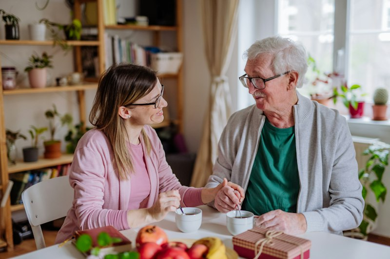

Conocer su riesgo de omisión médica
Identifica patrones de olvidos en sus tomas diarias de medicamentos antes de que se conviertan en una urgencia o un susto.
Responde un test gratuito de 2 minutos y recibe un diagnóstico del riesgo de omisión médica de tu papá, con recomendaciones para acompañarlo según su rutina y tu jornada laboral.

Consejo de Silvera
Sin alarmas frías ni llamadas que incomoden: una confirmación silenciosa basta para trabajar tranquila.
Una evaluación clara, humana y empática para transformar la incertidumbre en tranquilidad familiar.
Identifica patrones de olvidos en sus tomas diarias de medicamentos antes de que se conviertan en una urgencia o un susto.
Recomendaciones adaptadas a sus tratamientos (hipertensión, diabetes), su edad y los horarios de tu jornada de trabajo.
Estrategias de comunicación que respetan la dignidad de tu padre y evitan la frustración del «¡no me estés controlando!».
Deja de ser la «alarma humana» a la 1:00 PM y concéntrate en tus labores sabiendo que todo está en orden en casa.
Este Sábado 28 de Noviembre a las 07:00 AM (hora Lima), acompáñanos en una sesión práctica de 45 minutos pensada para hijas e hijos profesionales que cuidan a distancia en Lima. Aprende a prevenir olvidos involuntarios, reducir la ansiedad familiar y acompañarlos con calma, sin discusiones ni llamadas que interrumpan su día.

Ingresa tus datos para recibir el enlace exclusivo de acceso y los recursos en tu WhatsApp y correo:
Cómo identificar rutinas que afectan su bienestar físico y emocional.
Errores comunes de los familiares al gestionar medicamentos sin darse cuenta.
Estrategias para que tomen sus medicinas a tiempo y con total constancia.
Cómo mejorar la tranquilidad y el control del botiquín respetando su dignidad.
Cuidar a distancia mientras trabajas genera una carga mental silenciosa. Reconocerla es el primer paso para sanarla:
Dudas de si tomó la dosis del mediodía o si la confundió con otra.
Miligramos cambiantes, horarios cruzados y recetas médicas confusas.
Estar en la oficina pensando si en casa todo estará marchando en orden.
Recetas vencidas, compras a última hora y controles médicos que se cruzan.
Cuidado y Adherencia Médica en el Hogar
SilveraCalm acompaña a familias limeñas con telemetría pasiva y educación cálida. Nuestra misión es devolver la tranquilidad a los hijos que cuidan mientras trabajan, facilitando la toma de medicamentos sin invadir la privacidad ni vulnerar la independencia de los padres.
Al asistir a la sesión en vivo recibirás directamente en tu bandeja:
Herramienta clínica para detectar a tiempo omisiones de dosis.
Semáforo de sobrecarga del cuidador con pautas para su rutina.
Protocolo descargable en PDF para organizar tomas sin fricciones.
Un proceso fluido, respetuoso con tu tiempo y completamente libre de costos.
Un cuestionario breve sobre las tomas médicas y la dinámica habitual de tu papá en el hogar.
Tu Score de Tranquilidad y el nivel de riesgo de omisión de dosis, calculado de forma inmediata.
Descarga la «Guía de Cuidado sin Estrés» con pautas de comunicación y telemetría pasiva.
Antes de SilveraCalm
Con SilveraCalm
Casos ilustrativos basados en vivencias reales de familias en Lima.
«Entendí que el enojo de mi papá cuando le preguntaba por sus pastillas no era ingratitud, sino miedo a perder su independencia. Cambiaron por completo nuestras mañanas al quitar esa llamada obligatoria.»
«Ya no siento esa punzada de culpa cuando tengo reuniones largas en la oficina. Sé que está bien sin tener que llamarlo cada hora ni parecer una policía.»
«Cuidar su hipertensión sin vigilarlo con cámaras era justo lo que necesitábamos. La guía me sirvió para ponerme de acuerdo con mis hermanos.»
Consejos y artículos prácticos para cuidar a tus padres con ternura, sin desgaste y sin perder tu tranquilidad.
No encontramos artículos que coincidan con tu búsqueda.
Evalúa en 2 minutos el riesgo de omisión médica de tu papá. Recibe tu diagnóstico personalizado y la «Guía de Cuidado sin Estrés», de forma totalmente gratuita.
Hacer el test gratuitoSin registro con tarjeta · Acceso instantáneo · Respeto absoluto a su privacidad
Respuestas claras a las dudas más comunes de hijas e hijos cuidadores.
No, es 100% gratuito. Su propósito es orientarte, evaluar el nivel de sobrecarga que experimentas como cuidador o cuidadora, y brindarte herramientas inmediatas sin cobros ocultos.
Nunca. En SilveraCalm defendemos la autonomía de los adultos mayores. Empleamos telemetría pasiva: un sensor discreto en su botiquín registra de manera silenciosa las aperturas sin invadir su intimidad ni vigilarlo.
Por supuesto. Tu padre no tiene que interactuar con pantallas, instalar aplicaciones ni presionar botones complejos. Sigue su rutina diaria abriendo su botiquín habitual como siempre lo ha hecho.
El dispositivo almacena los registros de manera local y encriptada en su memoria interna, y se sincroniza automáticamente con tu aplicación tan pronto se reanuda la conexión.
Estamos ultimando los detalles del Test de Tranquilidad Familiar. Mientras tanto, te invitamos a explorar las historias y reflexiones en nuestro blog.
Ir al blog de SilveraCalm